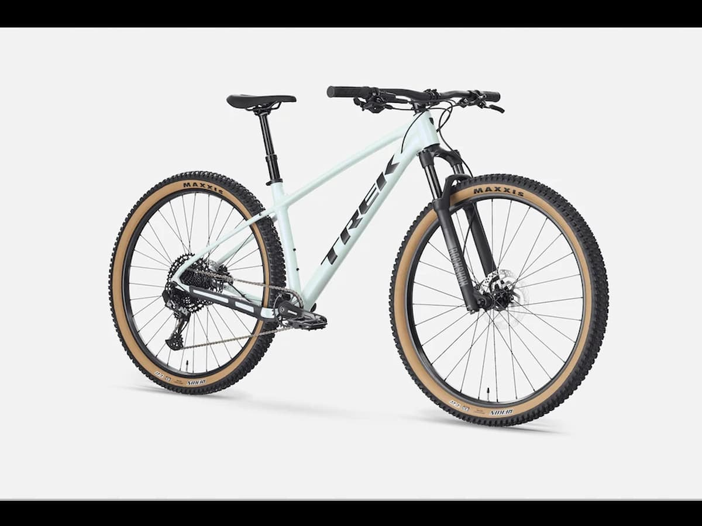

Chceš začít s cyklistikou, ale nevíš, kde začít? Tento krátký průvodce ti poradí, jak vybrat první kolo, co potřebuješ na cestu a jak jezdit bezpečně.
Nemusíš hned kupovat drahé vybavení. Stačí rozumné kolo, helma a chuť jet.
Jak vybrat první kolo
Typ kola závisí na tom, kde budeš nejčastěji jezdit.
- Horské kolo – do terénu a na lesní cesty
- Trekové kolo – univerzální, silnice i lehký terén
- Silniční kolo – rychlá jízda po asfaltu
Základní výbava cyklisty
Pro začátek si vystačíš s několika věcmi.
- Cyklistická helma
- Světla vpředu a vzadu
- Láhev na vodu
- Záplata nebo náhradní duše
Bezpečnost na silnici
Dodržuj pravidla silničního provozu a buď vidět. Helma je základ.
Před jízdou vždy zkontroluj brzdy a tlak v pneumatikách.